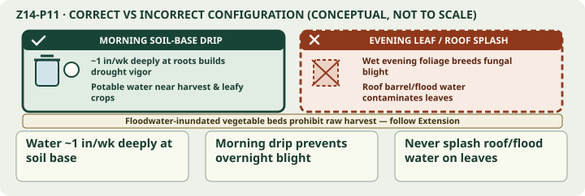

Z14-P11 · Food production and preservation · New manuscript
Irrigate deeply at the soil base using safe water for edible crops
Build deep drought-resistant roots while minimizing foliar fungal blight and surface waterborne pathogen splash.
When it applies · Vegetable gardens irrigated from municipal taps, tested private wells, or rain barrels.
Equipment · Soaker hose, drip line, or watering wand aimed at soil base, rain gauge, and clean water source awareness.

Actions
- Water deeply and infrequently (typically aiming for roughly 1 inch of combined rain + irrigation per week across most garden crops) right at the soil base using soaker hoses or low wands in early morning—deep watering drives roots downward, whereas daily shallow sprinkling leaves plants drought-fragile.[P03]
- Avoid overhead evening spraying onto foliage (wet leaves overnight trigger tomato blight and powdery mildew) AND never splash untreated roof rain-barrel water or suspect pond/stream water onto ready-to-eat leafy greens, berries, or near-harvest produce.[P03, P16, W03]
- Use confirmed potable water for washing harvested produce and for irrigating low edible leaves close to harvest; reserve clean roof rainwater strictly for soil-base watering of non-leafy crops or ornamentals well before harvest.[P03, P16, W03]
Failure recognition · Spraying untreated roof-gutter barrel water straight over mature lettuce leaves the evening before picking salad for dinner.[P03, W03, P16]
Verify · Confirm ~1 inch/week soil-base moisture (check 2–3 inches deep by hand), morning watering, and potable-water separation for near-harvest leaves.[P03, P16]
Stop or change course · Floodwater inundation of a vegetable garden contaminates soil with sewage/chemicals—do NOT harvest or eat flooded edible produce raw; follow Extension post-flood garden discard rules.[P16, D05]
Evidence and editorial notes
- D05 · FEMA / Ready.gov · Floods (current web edition)
- Section: Floods > Flash Flood Evacuation, Turn Around Don't Drown, and Re-Entry · Conditions: River flooding, urban flash flooding, dam/levee risk, and post-flood return
Support: Evacuate early when ordered, move to higher ground immediately on Flash Flood Warnings, never walk or drive through floodwater (6 inches knocks down adults; 12 inches carries most cars), and never enter flood-damaged homes until electrical, gas, and structural hazards are cleared.
Limitations: Floodwaters commonly contain raw sewage, fuel, submerged debris, and energized downed wiring. · Conflicting evidence: None; aligns with T07, T16, and N10.
Editorial note: Core flood evacuation, water-avoidance, and safe re-entry evidence. · Specialist reviewer: Emergency management and flood hydrology
Primary source · checked 2026-11-24 - P03 · University of Minnesota Extension · Planting the Vegetable Garden (current web edition)
- Section: Watering, Mulching, Crop Rotation, and Integrated Pest Management · Conditions: Home vegetable plots across seasonal dry/wet swings
Support: Water deeply at the soil base rather than overhead foliage to conserve moisture and curb fungal disease, mulch soil to stabilize temperature and weeds, rotate plant families across seasons, and identify pests before choosing least-toxic controls.
Limitations: Untreated rainwater or suspect surface water should not be splashed onto ready-to-eat leafy crops immediately before harvest. · Conflicting evidence: None; aligns with FSG-4 clean produce handling.
Editorial note: Grounds resilient low-input gardening and biological pest management. · Specialist reviewer: Extension horticulture and integrated pest management
Primary source · checked 2026-11-24 - P16 · USDA / FDA / CDC · Four Steps to Food Safety (current web edition)
- Section: Clean, Separate, Cook, Chill > Produce Washing and Cross-Contamination · Conditions: Garden-to-kitchen harvesting, food prep, and preservation workspaces
Support: Wash hands 20 seconds with soap and safe water, scrub firm produce under running safe water before peeling/cutting, keep raw animal foods strictly separate from ready-to-eat produce, and sanitize prep surfaces and utensils between tasks.
Limitations: Washing produce with soap, detergent, or bleach is unsafe and not recommended. · Conflicting evidence: None; extends F01–F03 into garden harvest and home preservation.
Editorial note: Anchors kitchen sanitation and cross-contamination barriers in Z14. · Specialist reviewer: Food safety and public health
Primary source · checked 2026-11-24 - W03 · CDC · Collecting Rainwater and Your Health (current web edition)
- Section: Rainwater might not be safe for household use · Conditions: Collected rain, including apparently clean runoff
Support: Germs and chemicals can enter from air, roof, gutters or storage. Prefer safe drinking water for ingestion.
Limitations: Site-specific roof and atmospheric chemistry vary; no universal roof-wash formula assumed. · Conflicting evidence: None; aligns with CDC potable-first hierarchy.
Editorial note: Separates catchment from raw storage and microbial treatment. · Specialist reviewer: Drinking-water safety and environmental health
Primary source · checked 2026-11-24
Source lineage · UMN Extension Gardening and USDA Food Safety; new manuscript · Classification · New manuscript.